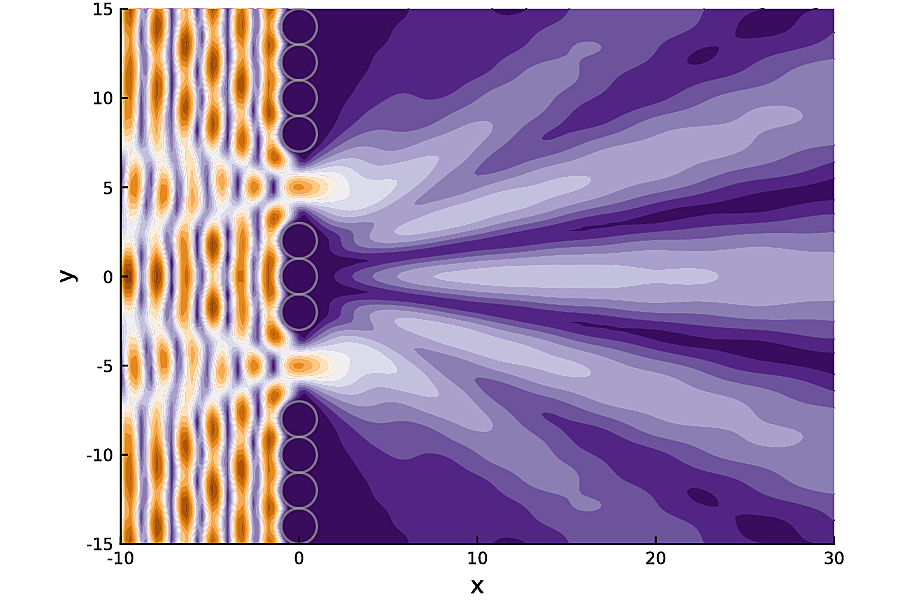
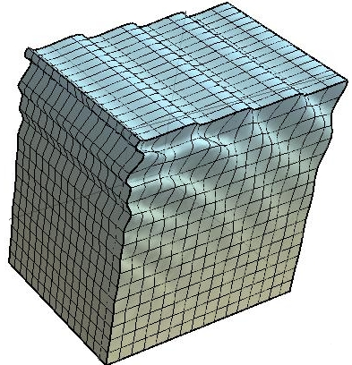
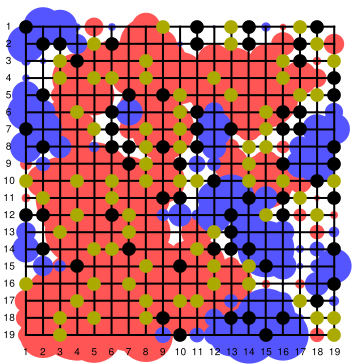
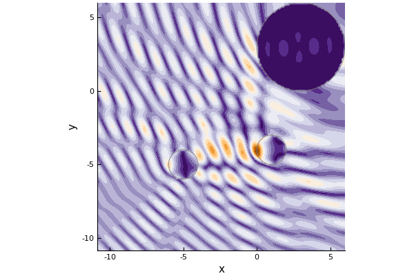
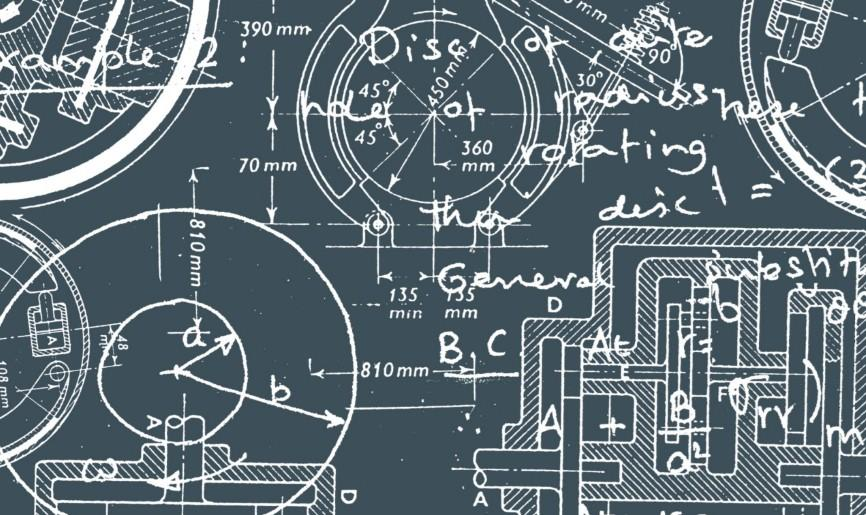
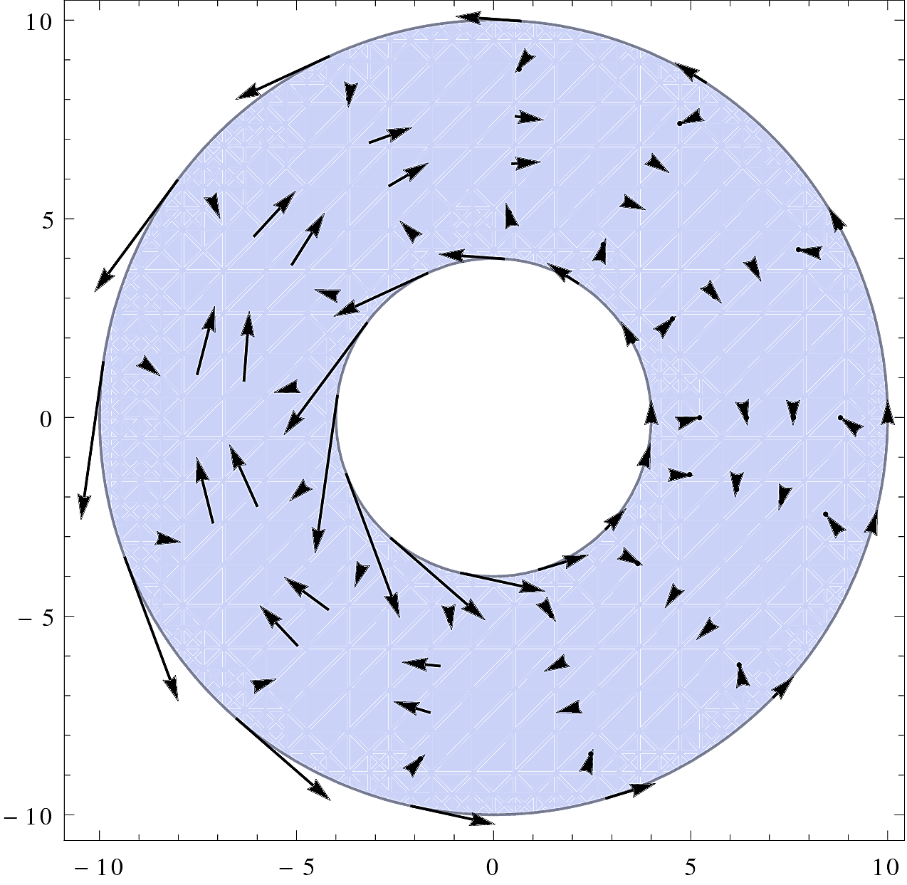

Welcome! I am an applied mathematician currently working at Manchester and am part of Waves in Complex Media group. My research focuses on wave scattering and solid mechanics. For an overview see my Projects, or for more details see my publications and CV.
For links to my work and social media, click on the blue logos below my picture.
PhD in applied mathematics, 2015
NUI Galway
MSc in applied mathematics, 2011
State University of Campinas (Unicamp)
BSc in applied mathematics, 2009
State University of Campinas (Unicamp)

Software for wave propagation and scattering.

Surface waves and wrinkles can be used to characterise the underlying soft solid.

Use AI concepts, such as entropy maximisation, to play games.

How can we use light and sound waves to measure densely packed particles.

Combining maths, data and code to solve commercial and industrial problems.

How do we mathematically describe the stresses and deformation of anisotropic soft solids.
I am currently leading tutorials in